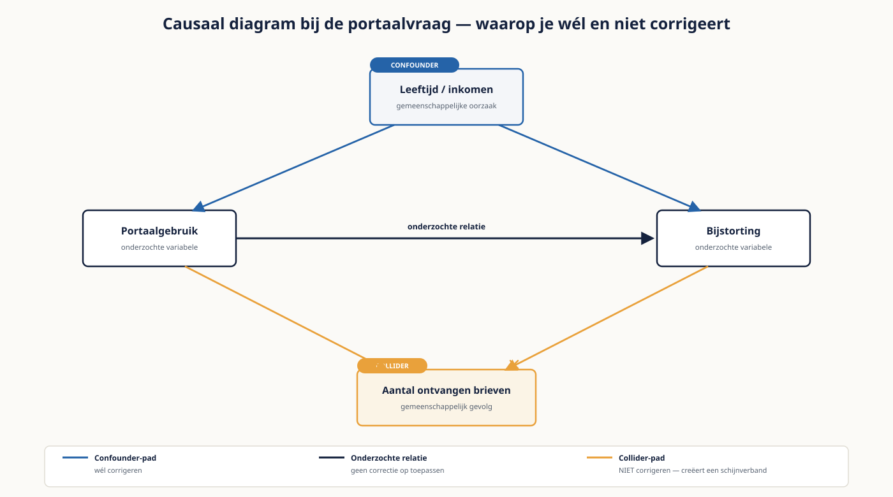

Cursus Datamanagement · Niveau 3 (CDMP Master + DCAM + IAPP AIGP) · Deel 28 van 29
Examentraining Master en causale analyse
Twee dingen die weinig met elkaar te maken hebben en die op dit niveau samenvallen: de laatste stap van Practitioner naar Master, en de vaardigheid om een oorzakelijke uitspraak te onderbouwen — of te laten. Bij de gefuseerde organisatie is de aanleiding concreet: heeft het nieuwe deelnemersportaal geleid tot minder telefoontjes, of zou dat toch al zijn gebeurd?
9secties
±2,5ureader + werkboek
8controlevragen
4quasi-experimentele methoden
Voorbereiding, geen vervanging — en controleer de eisen bij de bron. Deze cursusmap is onafhankelijk ontwikkeld door Ductus B.V. en niet gelieerd aan, geaccrediteerd door of goedgekeurd door DAMA International, IIBA, IAPP, de EDM Association of Microsoft. De eisen voor CDMP Master — het aantal examens, de scoregrens en de ervaringsbeoordeling — zijn de afgelopen jaren aangescherpt. De gegevens in dit deel zijn gecontroleerd in augustus 2026. Verifieer ze op cdmp.info en dama.org vóórdat je je inschrijft of je dossier indient.
Niveau 3: ㉒ Enterprise data-architectuur → ㉓ Moderne dataplatformparadigma's → ㉔ DCAM v3 in de praktijk → ㉕ Federatieve governance op schaal → ㉖ Datawaardering en data-economie → ㉗ AI- en modelgovernance → ㉘ Examentraining Master en causale analyse (hier) → ㉙ Masterproef — het transformatieprogramma
01
Twee routes die samenvallen
⏱ 10 min
Twee dingen die weinig met elkaar te maken hebben en die op dit niveau samenvallen. Het eerste is de laatste stap in de certificeringsroute: van Practitioner naar Master, wat neerkomt op tachtig procent op drie examens plus een beoordeling van je ervaring. Het tweede is de analysevaardigheid die op dit niveau wordt verwacht: causale uitspraken doen wanneer experimenteren niet kan.
Die combinatie is niet willekeurig. Op Master-niveau wordt van je verwacht dat je een uitspraak over oorzaak en gevolg kunt onderbouwen én dat je weet wanneer je hem níét moet doen. Dat laatste is zeldzamer en waardevoller.
Leerdoelen
Bepalen waar de tien procentpunt van 70 naar 80 liggen en in welke volgorde je ze ophaalt.
Een ervaringsdossier samenstellen dat op de beoordelingscriteria aansluit.
Kiezen tussen vier quasi-experimentele methoden op grond van de situatie.
Per methode de aanname benoemen die hem draagt, en die toetsen.
Een causaal diagram lezen en gebruiken om te bepalen waarop je moet corrigeren.
Herkennen wanneer geen enkele methode een causale uitspraak toelaat.
Master en de optionele AIGP plannen zonder dat het ene het andere verdringt.
02
Van 70 naar 80
⏱ 18 min
Tien procentpunt op drie examens is een andere opgave dan de acht procentpunt van Associate naar Practitioner. Waar die acht grotendeels uit tempo en leesfouten kwamen, komen deze tien vrijwel geheel uit kennis — want tempo en lezen heb je bij Practitioner al opgelost.
Bron van punten
Bij 60 naar 70
Bij 70 naar 80
Tempo
Vaak een derde
Vrijwel niets — dat is al opgelost
Leesfouten
Een kwart
Enkele punten, bij negatieve en best-vragen
Randgebieden
Weinig
Het grootste deel: de gebieden die je op 60% liet liggen
Diepte
Nauwelijks
Aanzienlijk: onderscheidingen die op Associate-niveau niet werden getoetst
De praktische consequentie: op dit niveau helpt bijstuderen wél, en het richt zich op de gebieden die je eerder bewust hebt laten liggen. Het klassieke patroon is dat iemand Practitioner haalde met sterke scores op zijn twee specialismen en zwakke op de rest. Voor Master moet die rest omhoog — en dat is minder leuk werk dan verdiepen waar je al goed in bent.
Waar de diepte zit
Onderscheidingen die op Associate-niveau als synoniem konden gelden: registry versus consolidation, validity versus accuracy versus conformity, business lineage versus provenance.
Volgorde en afhankelijkheid: welke stap komt vóór welke, en wat gebeurt er als je ze omdraait.
Uitzonderingen op vuistregels. Op Associate-niveau leer je de regel; op Master-niveau wordt gevraagd wanneer hij niet geldt.
De relatie tussen kennisgebieden. Vragen die twee gebieden combineren, zijn oververtegenwoordigd in de bovenste band.
Controlevraag
Uit Werkboek deel 28, Opdracht 1 — Waar liggen de tien punten
1Opdracht 1 vraagt jezelf te toetsen op vijf onderscheidingen door beide begrippen zonder boek te definiëren. Welke drie onderscheidingen noemt de reader als voorbeeld van begrippen die op Associate-niveau als synoniem konden gelden?Toon antwoord
Registry versus consolidation, validity versus accuracy versus conformity, en business lineage versus provenance. Op Associate-niveau volstond het om deze begrippen te herkennen; op Master-niveau moet je ze scherp van elkaar kunnen onderscheiden — dat is precies het soort diepte waar de tien procentpunt van 70 naar 80 in zit.
03
De ervaringsbeoordeling
⏱ 16 min
Naast de examens vraagt Master een beoordeling van je ervaring. Wat er precies wordt gevraagd, staat bij DAMA; wat een beoordelaar zoekt, is redelijk voorspelbaar.
Wat een beoordelaar zoekt
Wat er meestal wordt ingediend
Wat beter werkt
Breedte over kennisgebieden
Drie opdrachten in hetzelfde gebied
Vijf tot acht opdrachten die samen minstens zes gebieden raken
Diepte binnen een specialisme
Een lijst met projectnamen
Eén opdracht volledig uitgewerkt, met het genomen besluit
Eigen bijdrage
"Wij hebben..." over een teamresultaat
Wat jij deed, met wat er zonder jou anders was gegaan
Effect
Wat er is opgeleverd
Welk besluit erop is genomen en wat er daarna veranderde
Reflectie
Uitsluitend geslaagde opdrachten
Ook één die niet liep, met wat je eruit hebt geleerd
De laatste rij is de onderschatte
Een dossier met uitsluitend geslaagde opdrachten leest als een verkooppraatje. Eén opdracht die niet liep, met een eerlijke analyse van waarom, doet meer voor je geloofwaardigheid dan een zesde succes. De capstone en de masterproef zijn hiervoor geschikt, mits je de panelvragen erbij bewaart.
Controlevraag
Uit Werkboek deel 28, Opdracht 2 — Dossier tegen de criteria
1Opdracht 2 vraagt je dossier aan te vullen met één opdracht die niet liep, met een eerlijke analyse. Waarom weegt dat zwaarder dan een zesde succesverhaal?Toon antwoord
Een dossier met uitsluitend geslaagde opdrachten leest als een verkooppraatje. Eén opdracht die niet liep, met een eerlijke analyse van waarom, doet meer voor je geloofwaardigheid dan een zesde succes — het toont dat je reflectievermogen hebt, wat een van de vijf criteria is die een beoordelaar zoekt en die in de meeste ingediende dossiers ontbreekt.
04
Vier methoden zonder experiment
⏱ 20 min
Bij eerdere niveaus was het experiment de enige manier om een oorzakelijke uitspraak te doen. Dat klopt en het is onvolledig: er bestaan methoden voor situaties waarin experimenteren niet kan, en op Master-niveau wordt verwacht dat je ze kent — inclusief hun aannames.
Bij de gefuseerde organisatie is de aanleiding concreet: heeft het nieuwe deelnemersportaal geleid tot minder telefoontjes, of zou dat toch al zijn gebeurd? Randomiseren kan niet — het portaal is voor iedereen tegelijk uitgerold.
Methode
Wat het doet
Vereist
Dragende aanname
Verschil-in-verschillen
Vergelijkt de verandering bij een behandelde groep met die bij een onbehandelde groep
Een vergelijkbare groep die de interventie niet kreeg, en metingen vóór en na
Zonder interventie zouden beide groepen dezelfde ontwikkeling hebben doorgemaakt
Regressiediscontinuïteit
Vergelijkt net boven en net onder een scherpe grens
Een harde drempel waaraan de interventie hangt
Rond de grens zijn de groepen verder vergelijkbaar en manipuleert niemand zijn positie
Instrumentele variabele
Gebruikt een factor die wel de behandeling beïnvloedt maar niet de uitkomst
Zo'n factor, en die is zeldzaam
Het instrument werkt uitsluitend via de behandeling
Matching
Vergelijkt behandelde met sterk gelijkende onbehandelde eenheden
Voldoende waarneembare kenmerken
Er zijn geen onwaarneembare verschillen die zowel behandeling als uitkomst bepalen
De laatste kolom is de hele methode. Elk van deze technieken is rekenkundig eenvoudig en staat of valt met een aanname die je niet kunt bewijzen. De vaardigheid op dit niveau is niet het uitvoeren van de berekening maar het beoordelen van die aanname.
Toepassing op de portaalvraag
Verschil-in-verschillen kan, mits er een groep is die het portaal niet kreeg. Bij de fusie is die er: de deelnemers uit de Nautilus-portefeuille zijn later aangesloten.
Regressiediscontinuïteit valt af: er is geen harde grens, zoals een geboortejaar of deelnemernummerreeks, waaraan de uitrol hing.
Een instrumentele variabele zou een factor zijn die portaalgebruik beïnvloedt maar niet het belgedrag — zeldzaam, en hier moeilijk te verdedigen.
Matching kan op leeftijd, sector en historisch belgedrag — maar digitale vaardigheid is een onwaarneembaar verschil, dus wees hier voorzichtig.
Controlevraag
Uit Werkboek deel 28, Opdracht 4 — Methode kiezen
1Opdracht 4 vraagt de vier methoden op de portaalvraag te beoordelen en de gekozen methode te verantwoorden. Welke methode ligt het meest voor de hand, en welke voorwaarde moet je eerst toetsen?Toon antwoord
Verschil-in-verschillen, omdat de Nautilus-deelnemers later zijn aangesloten en dus een onbehandelde groep vormen. Voordat je de methode toepast, moet je wel toetsen of beide groepen vóór de uitrol dezelfde ontwikkeling lieten zien — anders valt de hoofdaanname weg dat beide groepen zonder interventie hetzelfde verloop zouden hebben gehad.
05
Aannames toetsen
⏱ 16 min
Je kunt de dragende aanname niet bewijzen. Je kunt hem wel onder druk zetten, en dat onderscheidt een verdedigbare analyse van een gok met formules.
Toets
Wat je doet
Wat het aantoont
Parallelle voorgeschiedenis
Kijk of beide groepen vóór de interventie hetzelfde verliepen
Maakt de hoofdaanname aannemelijker; bewijst hem niet
Placebotoets
Doe dezelfde analyse op een periode waarin niets gebeurde
Vind je daar een effect, dan meet je iets anders
Uitkomst die niet mag reageren
Toets een uitkomst die de interventie niet kan beïnvloeden
Een effect daar duidt op een gemeenschappelijke oorzaak
Gevoeligheid
Hoe sterk zou een onwaarneembare factor moeten zijn om je resultaat weg te verklaren?
Maakt de kwetsbaarheid van je conclusie zichtbaar
De vierde toets is op dit niveau de meest overtuigende en de minst gebruikte. Als je kunt laten zien dat een verborgen factor een onwaarschijnlijk sterke invloed zou moeten hebben om je effect te verklaren, is dat een aanzienlijk sterker argument dan een p-waarde.
De rapportageregel
Rapporteer de aanname, de toets, en het resultaat van de toets — in die volgorde, vóór het effect. Een lezer die eerst het effect ziet, beoordeelt de aanname daarna welwillender. Dat geldt ook voor jezelf.
Controlevraag
Uit Werkboek deel 28, Opdracht 5 — Aannames falsificeren
1Opdracht 5 vraagt een gevoeligheidsanalyse uit te voeren op de dataset en methode uit opdracht 4. Waarom is die toets volgens de reader het meest overtuigend en het minst gebruikt?Toon antwoord
Omdat hij laat zien hoe sterk een onwaarneembare factor zou moeten zijn om je effect volledig weg te verklaren — als dat een onwaarschijnlijk grote factor moet zijn, is dat een sterker argument dan een p-waarde. Hij wordt weinig gebruikt omdat hij meer denkwerk vraagt dan de andere drie toetsen, die zich beperken tot het uitvoeren van dezelfde analyse op een andere periode of uitkomst.
06
Causale diagrammen
⏱ 16 min
Een causaal diagram is een tekening van welke variabele welke beïnvloedt. Je hoeft er geen wiskunde mee te bedrijven; het is op dit niveau een denkinstrument dat één vraag beantwoordt: waarop moet ik corrigeren, en waarop juist niet?
Corrigeer op een gemeenschappelijke oorzaak van behandeling en uitkomst. Dat is de confounder, en het is de reden dat je überhaupt corrigeert.
Corrigeer níét op een variabele die tússen de behandeling en de uitkomst ligt. Die draagt een deel van het effect, en wegcorrigeren maakt het effect kleiner dan het is.
Corrigeer níét op een variabele die door beide wordt beïnvloed. Dat creëert een verband dat er niet was — een van de weinige manieren waarop corrigeren de zaak actief verslechtert.
Die derde regel is contra-intuïtief en wordt structureel geschonden, omdat corrigeren voor meer variabelen zorgvuldiger voelt. Bij de portaalvraag speelt hij concreet: corrigeren voor het aantal ontvangen brieven — dat zowel door portaalgebruik als door belgedrag wordt beïnvloed — introduceert een schijnverband.

Figuur 28-1 — Causaal diagram bij de portaalvraag — portaalgebruik en bijstorting met een confounder (leeftijd/inkomen) waarop je wél corrigeert, en het aantal ontvangen brieven als collider waarop je juist niet corrigeert
Controlevraag
Uit Werkboek deel 28, Opdracht 5 — Aannames falsificeren
1Opdracht 5 vraagt te beoordelen of corrigeren voor het aantal ontvangen brieven verstandig is. Wat is het antwoord, en waarom is dat contra-intuïtief?Toon antwoord
Nee. Het aantal ontvangen brieven wordt door zowel portaalgebruik als belgedrag beïnvloed — het ligt niet tussen behandeling en uitkomst, maar wordt door beide bepaald. Corrigeren daarvoor creëert een verband dat er niet was: een schijnverband. Dat is contra-intuïtief omdat corrigeren voor meer variabelen zorgvuldiger vóélt, terwijl het hier de zaak actief verslechtert in plaats van verbetert.
07
Wanneer je geen causale uitspraak doet
⏱ 14 min
Dit is het onderdeel dat je op Master-niveau onderscheidt. Vier situaties waarin het juiste antwoord is dat het niet kan.
Er is geen vergelijkbare onbehandelde groep en ook geen scherpe grens. Dan resteert matching, en die valt af zodra je een plausibele onwaarneembare factor kunt bedenken.
De interventie viel samen met iets anders. Bij de fusie werd het portaal uitgerold in dezelfde maand als een nieuw telefonisch keuzemenu — die twee zijn niet te scheiden.
De uitkomst is zelf beïnvloed door de meting. Als het portaal deelnemers aanmoedigt hun vraag digitaal te stellen, meet je verplaatsing en geen vermindering.
De aanname is niet te toetsen, ook niet indirect. Dan heb je een schatting met formules eromheen.
In alle vier de gevallen is het juiste antwoord aan de opdrachtgever: dit verband is er, deze verklaringen kan ik niet uitsluiten, en een oorzakelijke uitspraak is niet verdedigbaar. Dat voelt als falen en het is het tegendeel — het is precies het oordeel waarvoor iemand op dit niveau wordt ingehuurd.
Controlevraag
Uit Werkboek deel 28, Opdracht 6 — Je eigen causale uitspraak
1Opdracht 6 vraagt een eerder door jou gedane causale uitspraak te toetsen aan de vier situaties uit dit hoofdstuk. Wat zou je in plaats daarvan tegen de opdrachtgever hebben moeten zeggen, als geen van de methoden houdt?Toon antwoord
"Dit verband is er, deze verklaringen kan ik niet uitsluiten, en een oorzakelijke uitspraak is niet verdedigbaar." Dat voelt als falen en is het tegendeel — het is precies het oordeel waarvoor je op Master-niveau wordt ingehuurd: weten wanneer je een claim níét moet doen is zeldzamer en waardevoller dan de berekening zelf kunnen uitvoeren.
08
Planning
⏱ 12 min
Master vraagt drie examens op de bovenste band plus de ervaringsbeoordeling. De optionele AIGP staat daar los van en heeft een eigen ritme.
Weken
Focus
Toets
1 tot 5
De randgebieden: de kennisgebieden die je bij Practitioner liet liggen
Proefvragen per gebied, op 80%-niveau
6 tot 8
Diepte: onderscheidingen, volgordes en uitzonderingen op vuistregels
Gecombineerde vragen over twee gebieden
9
Volledig proefexamen op 80%-band
Consistentie over twee proefexamens
10 tot 12
De drie examens, verspreid
—
Parallel
Ervaringsdossier samenstellen en laten tegenlezen
Beoordeling door een vakgenoot
Later
AIGP, met een eigen voorbereiding van zes tot acht weken
Scenariovragen, gesloten boek
Het dossier loopt parallel omdat het ander werk is: verzamelen en schrijven in plaats van studeren. Wie het na de examens plant, stelt het uit — en dat is de meest voorkomende reden dat mensen op Practitioner blijven staan terwijl ze de examens allang hebben.
Controlevraag
Uit Werkboek deel 28, Opdracht 7 — Planning en go/no-go
1Opdracht 7 vraagt het ervaringsdossier parallel te plannen, niet erna. Wat is de meest voorkomende reden dat mensen op Practitioner blijven staan terwijl ze de examens allang hebben gehaald?Toon antwoord
Het dossier na de examens plannen — dat betekent het uitstellen. Het dossier is ander werk dan studeren: verzamelen en schrijven, geen kennis ophalen. Wie het als sluitstuk behandelt in plaats van als parallel spoor, komt er in de praktijk nooit meer aan toe.
09
Vijf fouten en examenrelevantie
⏱ 12 min
Vijf fouten
De tien procentpunt zoeken in tempo en lezen, terwijl die bij Practitioner al zijn opgehaald.
Verdiepen in je specialismen in plaats van de randgebieden ophalen.
Een ervaringsdossier met uitsluitend geslaagde opdrachten.
Een causale methode toepassen zonder de dragende aanname te toetsen.
Een causale uitspraak doen omdat de opdrachtgever erom vroeg, terwijl geen enkele methode hem draagt.
Examenrelevantie
Dit deel bereidt voor op CDMP Master en op het analytische deel van de AIGP. Voor het CDMP is de DMBOK-terminologie leidend; de causale methoden zijn praktijkkennis die het DMBOK op hoofdlijnen behandelt. Engelse termen: causal inference, difference-in-differences, regression discontinuity, instrumental variable, confounder, collider, sensitivity analysis.
Controlevraag
Zelftoets deel 28, vraag 12
1De opdrachtgever vraagt om een causale uitspraak die geen enkele methode draagt. Wat doe je?Toon antwoord
Je zegt dat het verband er is, welke verklaringen je niet kunt uitsluiten, en dat een oorzakelijke uitspraak niet verdedigbaar is. Je past niet de beste beschikbare methode toe met een voorbehoud, je herformuleert de vraag niet tot iets wat wel kan, en je geeft geen schatting met een ruim interval — al die drie routes suggereren meer zekerheid dan er is.
Verder naar deel 29
Deel 29 is de masterproef: het driejarige transformatieprogramma voor de gefuseerde organisatie, inclusief de DCAM-meting, de waarderingsvraag uit deel 26 en de twaalf AI-toepassingen uit deel 27. Neem uw scorerapporten, uw ervaringsdossier en uw planning uit dit deel mee.